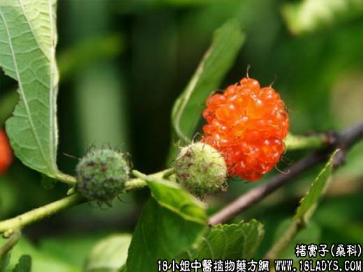

【中药概述】
楮实子为桑科乔木植物构树的成熟果实。甘，寒。归肝、脾、肾经。
1．滋肾，强筋，健骨：用于腰膝酸痛，脚膝无力，头晕眼花，阳痿遗精等。可与杜仲，狗脊，续断，怀牛膝等同用；如偏肾阴虚，骨蒸潮热，两足蒌软，可与山茱萸，枸杞子，杜仲，续断等同用。
2．清肝明目，健脾利水：用于目糊，目昏，目翳，可与枸杞子，女贞子，首乌，密蒙花，菟丝子等同用；水气浮肿等。
【药效鉴别】
楮实可补阴并可助阳，可用于肝肾气阴二亏的阳蒌、遗泄、眼目昏花，可配枸杞子，黑豆等。
【化学成分】
含皂甙、维生素B、油脂含非皂化物、饱和脂肪酸、油酸、亚油酸等。
【用量用法】
9——13g，水煎服，或入剂。